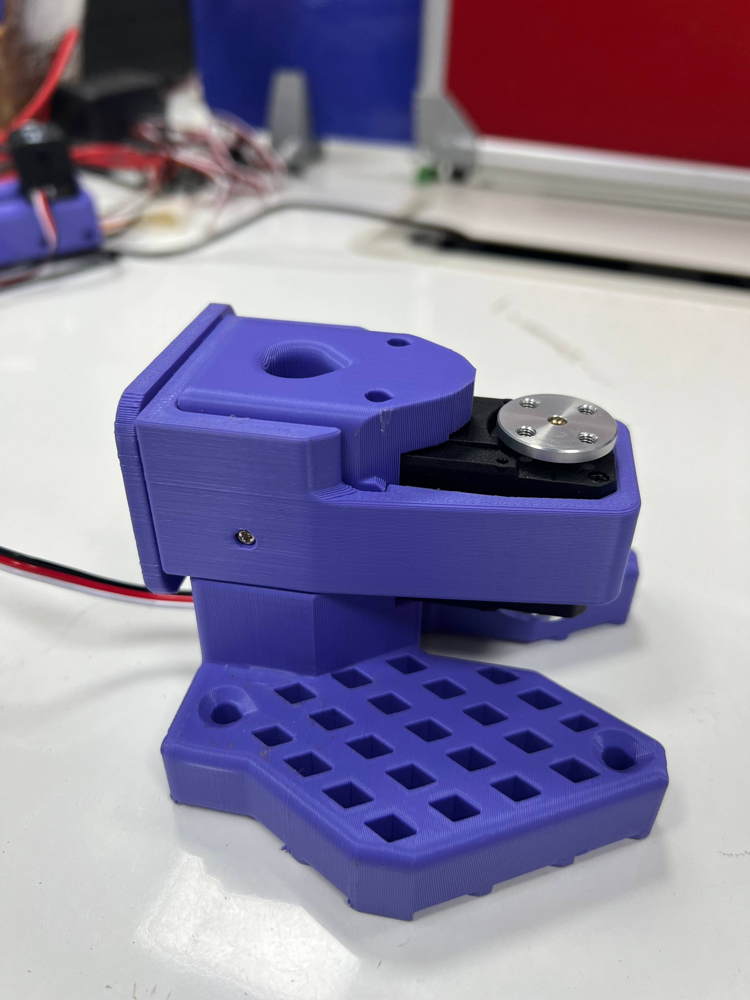
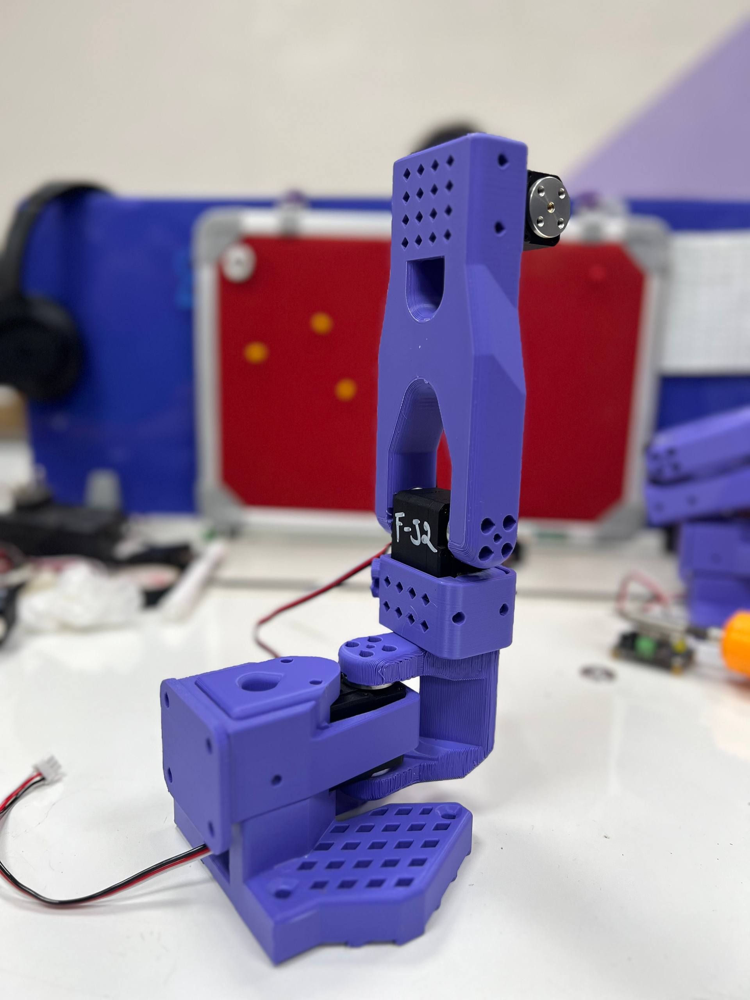
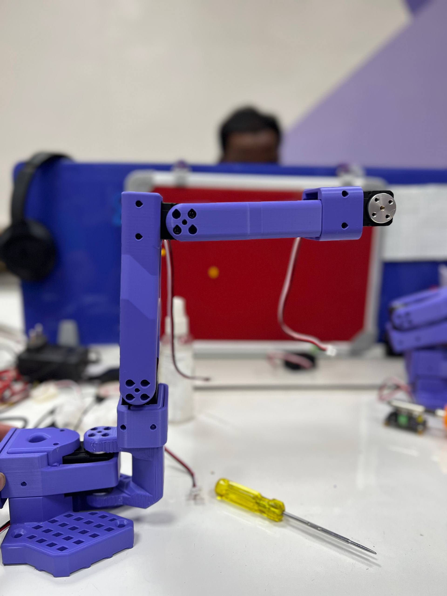
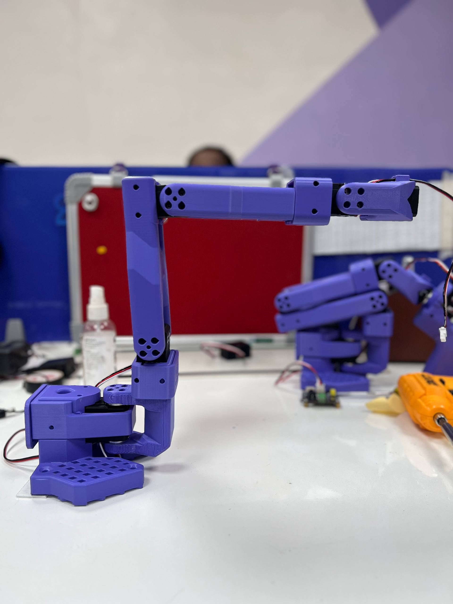
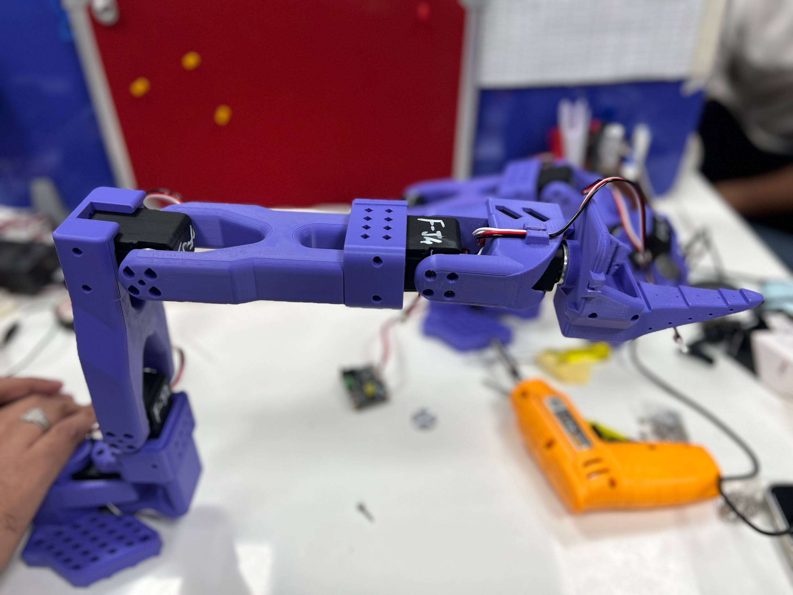
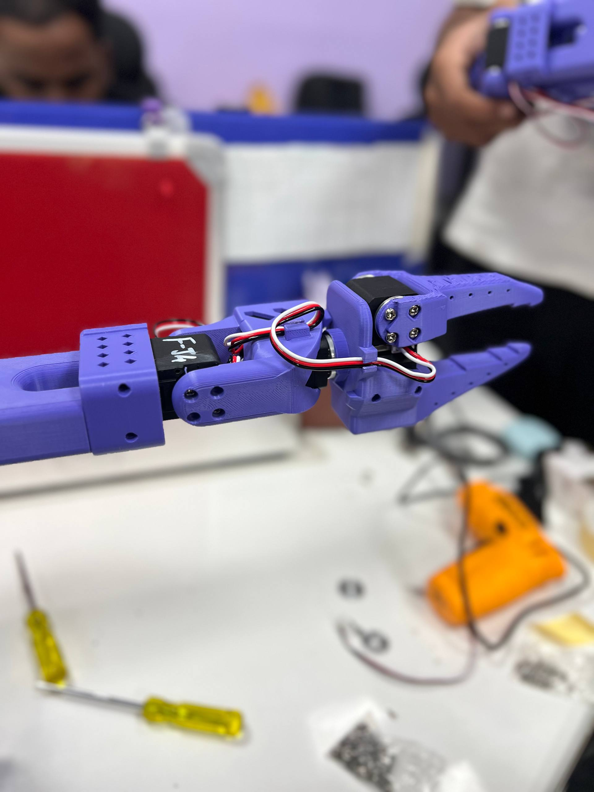
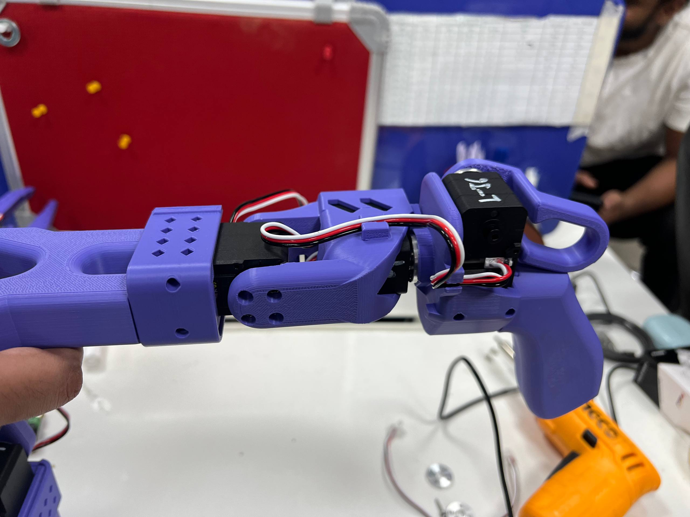

Pick & Place
Object Sorting Robot
MindGrip AI emphasizes cognitive decision-making for complex object targeting and handling. An end-to-end robotics project — from hardware assembly to autonomous sorting — powered by the LeRobot framework and the SO-101 6-DOF desktop arm. Prefer LeLab for the software workflow after assembly; use manual CLI when you need full control. This setup runs entirely from a MacBook Air (Apple M1) as the control PC, with cloud GPUs for training.
./so101_cli_menu.sh, or jump to the CLI Command Menu for copy-paste commands.What This Project Builds
A tabletop robotic arm that learns to autonomously sort objects by color, shape, or category into designated bins — using visual observation and motor actions collected through teleoperation, then trained with state-of-the-art imitation learning policies.
Autonomous Manipulation
The SO-101 follower arm learns from human demonstrations to grasp, lift, and place objects into target zones without any manual control.
Imitation Learning Pipeline
Full ML pipeline: record human demos via leader-follower teleoperation → build a HuggingFace dataset → train a neural policy → deploy autonomously.
Vision-Guided Sorting
A fixed USB camera streams an overview of the workspace. The policy maps pixels + joint states → motor commands to pick and sort with visual feedback.
Research & Education
Ideal for learning robotics, computer vision, and deep learning in one integrated project. Fully reproducible with open-source tooling.
MacBook Air Only — Feasibility for This Project
This project is planned to run on a single MacBook Air (Apple M1) as the control PC for assembly, teleop, recording, and deployment. Verified machine profile and step-by-step fit are below. Local training is the only phase that should move to the cloud.
| Item | This MacBook Air | Project implication |
|---|---|---|
| Model | MacBook Air · MacBookAir10,1 (MGN63HN/A) | Official macOS path (requirements-macos.txt, /dev/tty.usbmodem*) |
| Chip | Apple M1 · 8 CPU (4P+4E) · 7-core GPU | Fine for control, OpenCV camera, Rerun viz, ACT inference |
| Memory | 8 GB unified | OK for Steps 1–7 & 9; tight for local training (Step 8) |
| Storage | ~256 GB SSD · keep 80+ GB free before big record/train runs | Demo video + checkpoints fill disk quickly — free space first |
| OS | macOS (Apple Silicon / arm64) | USB serial + USB webcam via OpenCV are supported |
| Python (uv) | Python 3.13.4 in project .venv via uv | Satisfies requires-python >= 3.12. Prefer uv run … over system python3 (may still be 3.11) |
| Toolchain | uv installed; LeLab + CLI | Primary install / run path for this Mac setup |
Step fit on MacBook Air only
| Step | On this Air? | Notes |
|---|---|---|
| 1 · Install software | Yes | Use uv sync / requirements-macos.txt. Python 3.13.4 already available through uv. |
| 2 · Program motor IDs | Yes | Serial scripts are light; power arms from external PSUs. |
| 3 · Assemble at neutral | Yes | Physical workshop step; Mac only runs helpers. |
| 4 · Calibrate both arms | Yes | Calibration GUI + JSON save are fine on 8 GB. |
| 5 · Teleop + USB camera | Yes | Close extra apps; grant Camera permission to Terminal. Prefer USB cam over FaceTime. |
| 6 · Sorting scene | Yes | Physical only — no compute limit. |
| 7 · Record demonstrations | Yes (watch disk) | 50–200 episodes at 640×480 are doable; free space before long sessions. |
| 8 · Train policy | Cloud recommended | Do not rely on local Air training. Use LeLab → HF Jobs (or another cloud GPU). Prefer ACT. Skip Pi-0 / large VLAs on this laptop. |
| 9 · Deploy / evaluate | Yes | ACT rollout + camera on the Air is practical; keep other apps closed. |
uv run so you hit Python 3.13.4,
and plan training on a cloud GPU (HF Jobs or AWS EC2 below) after demos are recorded and pushed to the Hub.
MuJoCo simulation (optional)
This repo includes a LeRobot-native MuJoCo SO-101 follower (--robot.type=so101_mujoco).
The default scene is the official TheRobotStudio SO-ARM100 MuJoCo model
(Simulation/SO101, so101_new_calib) under
src/lerobot/robots/so101_mujoco/assets/ — accurate CAD meshes + STS3215 motor params, not a capsule approximation.
Use it when the real follower is not needed — or to generate practice datasets — without replacing real USB-cam sorting demos.
| Mode | Robot | Teleop | When |
|---|---|---|---|
| Leader connected | so101_mujoco |
so101_leader (real leader port + id) |
Leader plugged in; drive a sim follower for practice / demos |
| Sim only | so101_mujoco |
so101_keyboard |
No arms; record datasets for ML pipeline tests |
# Install once uv sync --extra so101-mujoco --extra feetech --extra viz # Sim-only teleop (keyboard) uv run lerobot-teleoperate \ --robot.type=so101_mujoco --robot.id=sim_follower \ --teleop.type=so101_keyboard --display_data=true # Real leader → MuJoCo follower uv run lerobot-teleoperate \ --robot.type=so101_mujoco --robot.id=sim_follower \ --teleop.type=so101_leader \ --teleop.port=/dev/tty.usbmodem5AE60832361 --teleop.id=LeoArm \ --display_data=true
examples/so101_mujoco/README.md.
Upstream model: TheRobotStudio/SO-ARM100 Simulation/SO101.
Sim datasets are for pipeline practice — the physical sorting project still needs real follower + USB camera demos.
On macOS, interactive viewer often needs mjpython (and DYLD_LIBRARY_PATH for the uv Python dylib).
Cloud ML training — what you need (Step 8)
Steps 1–7 and 9 run on this MacBook Air. Step 8 needs a NVIDIA CUDA GPU. Prefer ACT first (~2–6 GB VRAM at batch 8). Target a single GPU with ≥16 GB VRAM (24 GB is more comfortable).
AWS EC2 equivalents
| Goal | AWS EC2 | GPU | Approx. machine | Notes for this project |
|---|---|---|---|---|
| Best starter (ACT) | g5.xlarge or g5.2xlarge |
1× NVIDIA A10G ~24 GB | 4–8 vCPU · 16–32 GB RAM | Matches LeRobot A10G guidance. ACT on ~50 demos ≈ 1–2 h (order of magnitude). |
| Good alt (ACT / Diffusion) | g6.xlarge or g6.2xlarge |
1× NVIDIA L4 ~24 GB | Similar envelope | Newer L4 family; same VRAM class as A10G for this workload. |
| Budget / ACT-only | g4dn.xlarge |
1× NVIDIA T4 16 GB | 4 vCPU · 16 GB RAM | Fine for ACT; tight for Diffusion / SmolVLA. |
| Faster / larger batch | g5.12xlarge |
4× A10G | Multi-GPU | Only if you need speed — overkill for a first ACT sorting run. |
| Large VLAs (Pi-0 …) | p4d.24xlarge (or similar) |
A100 40 GB+ | Expensive | Not needed for the first color-sorting policy. |
g5.2xlarge (1× A10G, 8 vCPU, 32 GB RAM) with ≥100 GB gp3 SSD,
Deep Learning AMI (Ubuntu + PyTorch + CUDA), or the image huggingface/lerobot-gpu:latest.
Train ACT → download checkpoint → run Step 9 rollout on the Air.
a10g-large
(same GPU class as g5.*). No AMI/driver setup; billed by the second.
See also Compute Hardware Guide.
Sorting Scenarios You Can Implement
Each scenario below is a valid pick-and-place task you can collect demonstrations for and train a policy on.
🎨 Color-Based Sorting
Place red, blue, and green blocks into matching colored bins. The simplest and most demo-efficient use case to start with.
🔷 Shape-Based Sorting
Sort cubes, cylinders, and spheres into separate trays. Tests the policy's ability to generalize over object geometry.
♻️ Recycling Simulation
Classify plastic vs. paper vs. metal objects (represented by lightweight proxies) into correct disposal bins.
📦 Warehouse Pick-to-Bin
Pick objects from a central pile and route them to labeled destination zones — simulating e-commerce order fulfillment.
🍎 Produce Grading
Sort small produce replicas (apples, oranges) by ripeness indicator (color) into quality-graded output bins.
🔩 Defect Inspection
Separate "pass" parts from "reject" parts based on visual markers — an industrial quality-control simulation.
Why LeLab Matters for This Project
LeLab is the official LeRobot GUI for SO-101. After motors are programmed and arms are assembled, it is the fastest way to finish this pick-and-place project — calibrate, teleop, record demos, train (local or HF Jobs), and run the policy — without memorizing long CLI flags. Manual commands remain fully supported for debugging, scripting, and advanced options.
One app for the ML loop
Configure robots, teleoperate, record datasets, train, watch progress, and deploy inference from a single UI — the same end-to-end loop this page teaches with CLI.
Lower cognitive load
No need to remember --robot.port, camera JSON, dataset flags, or train args while you are learning sorting demos. LeLab walks you through the workflow.
Cloud training built in
Train on HF Jobs GPUs from the app (after hf auth login), with live progress and automatic checkpoints — harder to orchestrate by hand at first.
CLI still for hardware edge cases
Motor ID programming, physical assembly, and low-level recovery stay on scripts / terminal. LeLab does not replace the workshop steps.
Prefer LeLab when…
You want the SO-101 software path with the least friction.
- First-time calibrate → teleop → record → train → rollout
- You want live training viz and one-click policy run
- You want cloud GPU jobs without writing job YAML yourself
- Teaching / demos where CLI typos slow everyone down
Prefer manual CLI when…
You need precise control or hardware-only tooling.
- Programming motor IDs with
set_middle_positions.py - Custom camera JSON, ports, or automation scripts
- Debugging serial / calibration mismatch in the terminal
- Policies, flags, or workflows LeLab does not expose yet
What you do in LeLab vs manual commands
| Project action | In LeLab (GUI) | Manual command / work |
|---|---|---|
| Install / launch app | Yes — uv tool install git+https://github.com/huggingface/leLab.git && lelab |
N/A (LeLab is the GUI itself) |
| Program motor IDs & middle positions | No — physical / script step | uv run python set_middle_positions.py --port … --id … |
| Assemble joints at neutral | No — workshop step | Attach horns while motors hold ~2047 |
| Add robots (leader / follower) & attach cameras | Yes — select arm type & ports. Attach USB camera on the follower (Robot) only — not the leader (Teleoperator) | Pass --robot.cameras=… on the follower; leader has no camera flags |
| Calibrate joints | Yes — guided per-joint calibration from middle | lerobot-calibrate (separate leader & follower sessions) |
| Teleoperate (leader → follower) | Yes — live 3D arm viz. Camera feed: open Teleoperation → right Cameras panel → toggle On (off by default; needs follower cameras configured) | lerobot-teleoperate (+ optional Rerun via --display_data=true) |
| Find serial ports / camera index | Often via robot setup UI; re-check if ports change | lerobot-find-port · lerobot-find-cameras opencv |
| Set up sorting scene (bins, lighting, mount) | No — physical workspace | Tape workspace, mount USB cam, place bins |
| Record demonstration dataset | Yes — task text, episode count, durations; spacebar between episodes | lerobot-record with dataset / camera flags |
| Inspect / visualise dataset | Use app flows / Hub datasets; CLI still useful for deep inspection | lerobot-dataset-viz |
| Train policy locally | Yes — pick dataset, policy, batch size, steps; live progress | lerobot-train --policy.type=act … |
| Train on cloud GPUs (HF Jobs) | Yes — first-class in LeLab (after hf auth login) |
Possible via Hub / jobs tooling; more setup by hand |
| Train on community Hub datasets | Yes — enter any HF dataset ID | lerobot-train --dataset.repo_id=… |
| Run / deploy trained policy | Yes — pick a job/model and run inference on the robot | lerobot-rollout --policy.path=… |
| Replay a recorded episode | Prefer CLI for this verification step | lerobot-replay --episode=… |
LeoArm) — not the leader teleoperator.
Same rule as CLI --robot.cameras=…. During Teleoperation, the right-side Cameras panel is
Off by default — flip it On to see the live browser preview (grant camera permission if asked).
Prefer the USB cam over FaceTime; if the feed fails after unplug/replug, use the panel’s retry button.
# Install once, then start anytime uv tool install git+https://github.com/huggingface/leLab.git lelab
SO-101 Arm Specification
The SO-101 is a 6-DOF desktop arm built around Feetech STS3215 servos. A bilateral (leader + follower) setup is used for teleoperated data collection.
| Component | Leader Arm | Follower Arm |
|---|---|---|
| Degrees of Freedom | 6-DOF | 6-DOF |
| Motors | 6 × STS3215-C046/C001 (5 V) | 6 × STS3215-C018 (12 V, 30 kg·cm) |
| Encoder Resolution | 12-bit · 4096 steps/rev | 12-bit · 4096 steps/rev |
| Communication | TTL Serial Bus 1 Mbps | TTL Serial Bus 1 Mbps |
| USB Port (this Mac) | /dev/tty.usbmodem5AE60832361 | /dev/tty.usbmodem5B141118901 |
| LeLab / CLI id | LeoArm → so_leader/LeoArm.json | LeoArm → so_follower/LeoArm.json |
| Power Supply | 5 V external PSU | 12 V external PSU |
| Recommended Camera | — | USB webcam · 640×480 @ 30 FPS · 3P lens (OpenCV) |
| Camera Resolution Used | — | 640 × 480 @ 30 FPS |
| # | Joint | Motor Name | Role |
|---|---|---|---|
| 1 | shoulder_pan | STS3215 | Base rotation (left / right) |
| 2 | shoulder_lift | STS3215-C001 (leader) / C018 | Shoulder pitch (up / down) |
| 3 | elbow_flex | STS3215 | Elbow bend |
| 4 | wrist_flex | STS3215 | Wrist pitch |
| 5 | wrist_roll | STS3215 | Wrist rotation |
| 6 | gripper | STS3215 | Gripper open / close |
Motor Variants — Leader (5 V)
Lighter/faster motors for sensing & teleop input. J2 uses higher-torque C001.
| # | Motor | Model | Gear | Stall Torque | Voltage |
|---|---|---|---|---|---|
| 1 | shoulder_pan | STS3215-C046 | 1:147 | ~14.4 kg·cm | 5 V |
| 2 | shoulder_lift | STS3215-C001 | 1:345 | ~19 kg·cm | 5 V |
| 3–6 | elbow / wrist / gripper | STS3215-C046 | 1:147 | ~14.4 kg·cm | 5 V |
Motor Variants — Follower (12 V)
All joints use C018 (1:345, ~30 kg·cm) for payload holding torque. Do not mix C018 and C046 on the same arm without recalibrating.
| # | Motor | Model | Gear | Stall Torque | Voltage |
|---|---|---|---|---|---|
| 1–6 | all joints | STS3215-C018 | 1:345 | ~30 kg·cm | 12 V |
Key Steps to Build Your Sorting Robot
Follow these 9 phases end-to-end — from zero hardware to an autonomous pick-and-place robot — on the MacBook Air control PC. After assembly, prefer LeLab for calibrate → teleop → record → train (cloud) → deploy; CLI examples below are the equivalent manual path. See Host Computer above for Air-specific limits.
Install Software & Dependencies
SoftwareClone the repository and install dependencies. This project uses OS-specific requirement files — pick the one that matches your machine. On the MacBook Air host, prefer uv.
- Python 3.12+ and Git are prerequisites.
- This MacBook Air (uv): project
.venvalready uses Python 3.13.4 — that satisfies 3.12+. Always run commands withuv run …(systempython3may still be 3.11). - macOS: use
requirements-macos.txt(this is the file used on this setup). - Ubuntu / Linux: use
requirements-ubuntu.txt. - Other platforms should use the matching requirements file for that OS when available (or generate one from
requirements.in). - On Linux, add your user to the
dialoutgroup for USB serial access. (Not needed on macOS.) - Disk: free space before install + later demos (aim for 80+ GB free on the Air).
# Clone the repo git clone https://github.com/rigbetellabs/lerobot.git cd lerobot # macOS MacBook Air — preferred (uv manages Python 3.13.4 in .venv) uv sync --locked --extra feetech --extra viz uv run python --version # expect Python 3.13.x # Alternate: pip on macOS pip install -r requirements-macos.txt # Ubuntu / Linux pip install -r requirements-ubuntu.txt # Linux only: grant serial port access sudo usermod -aG dialout $USER # then log out & back in
requirements-macos.txt and requirements-ubuntu.txt are generated from the same requirements.in but pin OS-specific wheels and packages. Always install from the file that matches your OS. On this Air, uv sync is the primary path.Program Motor IDs
HardwareEvery Feetech motor ships with ID = 1. Program each motor one at a time with set_middle_positions.py — the script sets the ID, baud rate (1 Mbps), and moves the joint to the neutral midpoint (~2047). On this macOS setup the serial ports are:
- Leader arm:
/dev/tty.usbmodem5AE60832361 - Follower arm:
/dev/tty.usbmodem5B141118901 - Connect ONLY the target motor, press Enter when prompted, then attach the joint link while it holds middle position.
Leader arm — IDs 1–6
# Port: /dev/tty.usbmodem5AE60832361 uv run python set_middle_positions.py --port /dev/tty.usbmodem5AE60832361 --id 1 # shoulder_pan → Position: 2062 / 2047 (✓ At middle!) uv run python set_middle_positions.py --port /dev/tty.usbmodem5AE60832361 --id 2 # [2/6] shoulder_lift — Found motor baudrate=1,000,000 id=1 # ⚠ Setting ID 1 → 2 · Position: 2074 / 2047 (✓ At middle!) # → Attach joint link, then Enter → ✓ assembled at neutral uv run python set_middle_positions.py --port /dev/tty.usbmodem5AE60832361 --id 3 # [3/6] elbow_flex — Setting ID 1 → 3 · Position: 2046 / 2047 (✓) uv run python set_middle_positions.py --port /dev/tty.usbmodem5AE60832361 --id 4 # [4/6] wrist_flex — Setting ID 1 → 4 · Position: 2053 / 2047 (✓) uv run python set_middle_positions.py --port /dev/tty.usbmodem5AE60832361 --id 5 # [5/6] wrist_roll — Setting ID 1 → 5 · Position: 2022 / 2047 (✓) uv run python set_middle_positions.py --port /dev/tty.usbmodem5AE60832361 --id 6 # [6/6] gripper — Setting ID 1 → 6 · Position: 2057 / 2047 (✓)
Follower arm — IDs 1–6
# Port: /dev/tty.usbmodem5B141118901 uv run python set_middle_positions.py --port /dev/tty.usbmodem5B141118901 --id 1 # [1/6] shoulder_pan — Position: 2051 / 2047 (✓ At middle!) # → Attach joint link → ✓ assembled at neutral uv run python set_middle_positions.py --port /dev/tty.usbmodem5B141118901 --id 2 # [2/6] shoulder_lift — Found motor id=2 · Position: 2046 / 2047 (✓) uv run python set_middle_positions.py --port /dev/tty.usbmodem5B141118901 --id 3 # [3/6] elbow_flex — Setting ID 1 → 3 · Position: 2051 / 2047 (✓) uv run python set_middle_positions.py --port /dev/tty.usbmodem5B141118901 --id 4 # [4/6] wrist_flex — Setting ID 1 → 4 · Position: 2050 / 2047 (✓) uv run python set_middle_positions.py --port /dev/tty.usbmodem5B141118901 --id 5 # [5/6] wrist_roll — Setting ID 1 → 5 · Position: 2044 / 2047 (✓) uv run python set_middle_positions.py --port /dev/tty.usbmodem5B141118901 --id 6 # [6/6] gripper — Setting ID 1 → 6 · Position: 2051 / 2047 (✓)
/dev/tty.usbmodem… — re-check with uv run lerobot-find-port if they change after unplugging.Assemble at Neutral Positions
HardwareJoint links were attached during Step 2 while each motor held ~2047. Never attach a horn off-middle — the software zero will be mechanically offset and the arm can damage itself.
- Leader:
/dev/tty.usbmodem5AE60832361· Follower:/dev/tty.usbmodem5B141118901 - Procedure: run helper → motor holds middle → slide horn on → lock set screw → press Enter.
- Never force a joint past its mechanical stop.
Follower arm — neutral assembly photos

J1 shoulder_pan

J2 shoulder_lift

J3 elbow_flex

J4 wrist_flex

J5 wrist_roll

J6 gripper
Leader J1–J5 match the follower photos. Leader gripper differs:

Leader J6 gripper
# Re-seat a single joint if needed (example: follower wrist_flex) uv run python set_middle_positions.py --port /dev/tty.usbmodem5B141118901 --id 4
Calibrate Both Arms
HardwareCalibration records each joint's encoder range_min / range_max and homing offset. Runtime uses that JSON to convert ticks → degrees so leader and follower report the same values in the same pose.
This project (LeLab robot LeoArm)
| Arm | Port | Active calibration file | Notes |
|---|---|---|---|
| Leader | /dev/tty.usbmodem5AE60832361 |
teleoperators/so_leader/LeoArm.json |
Completed Aug 2026. Do not use old my_leader.json. |
| Follower | /dev/tty.usbmodem5B141118901 |
robots/so_follower/LeoArm.json |
Completed Aug 2026. Old my_follower.json kept but unused. New lift/elbow ranges are realistic (old Jul file had full 0–4095 on those joints). |
Follower Aug 2026 vs Jul my_follower.json (summary)
| Joint | Old range | New range | Note |
|---|---|---|---|
| shoulder_pan | 2273 | 2368 | Similar |
| shoulder_lift | 4095 | 2168 | Old looked incomplete; new is realistic (slightly short of green-tick target) |
| elbow_flex | 4095 | 2219 | Same improvement |
| wrist_flex | 2314 | 2295 | ~same |
| wrist_roll | 4095 | 3765 | Still strong |
| gripper | 1494 | 1507 | ~same |
LeLab Status panel
- Idle until you click Start — Find Port only detects USB, not live motor reads.
- Recording Ranges shows Live Position Data (min / current / max). Put all joints mid-range before Start (no Enter step like CLI).
- Green tick = that joint’s
max−minreached ~98% of an SO-101 target (guide only). Save still works if one joint stays unticked after a full sweep. - Save Calibration writes the JSON. Cancel / Stop / leave page discards the session — always Save first.
# CLI fallback — leader (matches LeLab id) uv run lerobot-calibrate \ --teleop.type=so101_leader \ --teleop.port=/dev/tty.usbmodem5AE60832361 \ --teleop.id=LeoArm # CLI fallback — follower uv run lerobot-calibrate \ --robot.type=so101_follower \ --robot.port=/dev/tty.usbmodem5B141118901 \ --robot.id=LeoArm
LeoArm on this Mac. Teleop/record: --teleop.id=LeoArm and --robot.id=LeoArm. Sync check: Teleop sync checklist.Verify with Live Teleoperation
SoftwareBefore collecting training data, confirm everything works end-to-end: leader movements should be mirrored by the follower in real time with no lag or joint slipping.
# Basic teleoperation (no camera) — this Mac ports + LeoArm leader id uv run lerobot-teleoperate \ --robot.type=so101_follower \ --robot.port=/dev/tty.usbmodem5B141118901 \ --robot.id=LeoArm \ --teleop.type=so101_leader \ --teleop.port=/dev/tty.usbmodem5AE60832361 \ --teleop.id=LeoArm # With USB camera + Rerun visualisation uv run lerobot-teleoperate \ --robot.type=so101_follower \ --robot.port=/dev/tty.usbmodem5B141118901 \ --robot.id=LeoArm \ --teleop.type=so101_leader \ --teleop.port=/dev/tty.usbmodem5AE60832361 \ --teleop.id=LeoArm \ --robot.cameras="{front: {type: opencv, index_or_path: 0, width: 640, height: 480, fps: 30, fourcc: MJPG}}" \ --display_data=true
Set Up the Sorting Scene
HardwareDesign a consistent tabletop workspace before collecting demonstrations. Consistency is critical — the policy generalises from what it sees, so the scene must stay fixed.
- Workspace boundary: Use tape or a mat to mark the reachable area (≈ 30 × 30 cm in front of the arm base).
- Object placement: Define a source zone (random drop area) and labelled destination bins (e.g., red bin left, blue bin right).
- Camera mount: Place the USB camera on a stand in front of / above the workspace (see Step 5). Same angle every session.
- Lighting: Use stable, diffuse lighting — avoid strong shadows or reflections on objects.
- Objects: Start with 3 distinctly coloured, easily grippable blocks (≈ 3 × 3 × 3 cm works well).
Collect Demonstration Data
DataUse lerobot-record to capture teleoperated episodes directly into a LeRobot-format dataset (HuggingFace compatible). Each episode records joint positions, velocities, camera frames, and timestamps.
- Target 50–200 demonstrations per task variant for a good policy.
- Vary the starting position of objects slightly across episodes to improve generalisation.
- Press Enter to start an episode, Ctrl+C to end the recording session.
uv run lerobot-record \ --robot.type=so101_follower \ --robot.port=/dev/tty.usbmodem5B141118901 \ --robot.id=LeoArm \ --teleop.type=so101_leader \ --teleop.port=/dev/tty.usbmodem5AE60832361 \ --teleop.id=LeoArm \ --robot.cameras="{front: {type: opencv, index_or_path: 0, width: 640, height: 480, fps: 30, fourcc: MJPG}}" \ --dataset.repo_id=your_username/pick_place_sorting \ --dataset.num_episodes=100 \ --dataset.task="Pick coloured block and place in matching bin" # Visualise your dataset to spot bad episodes uv run lerobot-dataset-viz --repo-id your_username/pick_place_sorting
Train an Imitation Learning Policy
ML TrainingTrain a neural policy using lerobot-train. The policy learns to map visual observations and joint states to motor commands by imitating your recorded demonstrations.
Full comparison (with / without USB camera): SO-101 Policy Cheatsheet.
# Train ACT policy — good first choice for sorting uv run lerobot-train \ --policy.type=act \ --dataset.repo_id=your_username/pick_place_sorting \ --output_dir=outputs/train/sorting_act \ --training.num_workers=4 # Or train Diffusion Policy for smoother trajectories uv run lerobot-train \ --policy.type=diffusion \ --dataset.repo_id=your_username/pick_place_sorting \ --output_dir=outputs/train/sorting_diffusion
g5.xlarge / g5.2xlarge (1× A10G ~24 GB) or g6.xlarge (1× L4 ~24 GB);
budget ACT-only: g4dn.xlarge (T4 16 GB). Full table under Host Computer → Cloud ML training above.
Or use LeLab → HF Jobs flavor a10g-large (same class, less setup).
Local MPS/CPU ACT is tiny-experiments only. Diffusion / SmolVLA / Pi-0 are not practical on this Air.
a10g-large) or AWS g5.2xlarge → download / point --policy.path to the checkpoint → run Step 9 rollout on the Air. Expect roughly 1–2 h for ACT on ~50 demos on A10G/L4.Deploy & Evaluate the Policy
InferenceRun the trained policy on the physical robot using lerobot-rollout. The robot will observe the scene through its camera and autonomously execute pick-and-place actions.
# Evaluate the trained policy on the robot uv run lerobot-rollout \ --robot.type=so101_follower \ --robot.port=/dev/ttyACM0 \ --robot.id=LeoArm \ --robot.cameras="{front: {type: opencv, index_or_path: 1, width: 640, height: 480, fps: 30, fourcc: MJPG}}" \ --policy.path=outputs/train/sorting_act/checkpoints/last \ --num_episodes=20 \ --display_data=true # Replay a recorded episode to verify arm hardware uv run lerobot-replay \ --robot.type=so101_follower \ --robot.port=/dev/ttyACM0 \ --robot.id=LeoArm \ --dataset.repo_id=your_username/pick_place_sorting \ --episode=0
- Success metric: Track % of objects correctly placed per evaluation run.
- Iterate: Add more diverse demos, augment data, retrain if performance is below target.
- Push to Hub: Share your dataset and policy on HuggingFace Hub for reproducibility.
Troubleshooting
Common faults from the SO-101 setup guide, kept here so you do not need a separate page.
Input voltage error
External PSU off/disconnected. Turn 12 V (follower) / 5 V (leader) ON, reseat daisy-chain cables, power-cycle, retry.
Overload error
Joint hit a hard stop or was blocked. Move the joint free by hand, power-cycle to clear the fault flag, retry.
No status packet
Bus communication break (loose JST cable). Check connectors up to the last responding motor ID, power-cycle.
Motor not found
set_middle_positions.py cannot see the servo. Confirm cable, correct macOS /dev/tty.usbmodem… port, and clear overload by power-cycle.
Calibration mismatch
Motor replaced or reassembled since last JSON. Type c at the prompt, or re-run lerobot-calibrate / LeLab calibrate. On this Mac use id LeoArm for both arms (not old my_leader / my_follower).
LeLab Status empty / no ticks
Arm powered? Correct leader port …5AE60832361? Badge must be Recording Ranges. Green ticks are optional — click Save Calibration before Cancel. Cancel discards results.
Wrong leader/follower port in LeLab
Find Port can attach the wrong adapter. Leader = …5AE60832361, follower = …5B141118901. Swap → sync/calibration looks broken.
invalid choice: so101_follower
Wrong flag prefix. Leader → --teleop.type=so101_leader. Follower → --robot.type=so101_follower.
Key Scripts & Commands
All entry-points exposed by LeRobot after installation via uv sync.
| Command | Phase | What It Does |
|---|---|---|
lerobot-find-port | Hardware | Detect which /dev/ttyACM* port corresponds to each arm's bus adapter. |
lerobot-find-cameras | Hardware | List available camera device indices for OpenCV. |
lerobot-calibrate | Hardware | Interactive joint calibration — records encoder min/max per joint to a JSON file. |
lerobot-teleoperate | Hardware | Real-time leader → follower teleoperation with optional live Rerun visualisation. |
lerobot-record | Data | Record teleoperated demonstrations into a LeRobot dataset with camera + joint data. |
lerobot-replay | Data | Replay a saved episode on the physical arm — useful for hardware verification. |
lerobot-dataset-viz | Data | Visualise dataset episodes to inspect quality before training. |
lerobot-train | ML | Train an imitation learning policy (ACT, Diffusion, SmolVLA, etc.) on a dataset. |
lerobot-eval | ML | Evaluate a trained policy on a simulation environment. |
lerobot-rollout | Inference | Deploy a trained policy on the real robot for autonomous execution. |
set_middle_positions.py | Hardware | Program motor IDs and move each motor to the neutral encoder midpoint (2047). |
Quick-Start Checklist
Hardware Ready
- Both arms fully assembled
- Motor IDs 1–6 programmed on each arm
- Leader (5 V) & follower (12 V) PSU connected
- USB camera (640×480 @ 30 FPS) mounted on a fixed stand
- Sorting bins positioned in workspace
Software Ready (MacBook Air)
uv sync/requirements-macos.txtinstalleduv run python --versionshows 3.12+ (this Air: 3.13.4)lelabinstalled (uv tool install …leLab.git) — recommended- ~80+ GB free disk before long recording
- Ports identified (LeLab setup or
lerobot-find-port) - Both arms calibrated & teleop verified (LeLab or CLI)
Data & Training
- 50–200 demonstrations recorded on the Air
- Dataset visualised & bad episodes removed
- Policy type chosen (ACT recommended on Air)
- Training on cloud: HF Jobs
a10g-largeor AWSg5.2xlarge(not local Air) - Policy evaluated on real hardware from the Air
ROS2, Gazebo, RViz & URDF — Summary Recommendation
Guidance for the remaining project phases (sorting scene, demos, training, deploy), based on whether to involve ROS2. This project’s goal is a learned pick-and-place sorter — not classical scripted MoveIt picking.
lerobot-record → lerobot-train → lerobot-rollout).
Use your SO-101 URDF only as a helper for kinematics / reachability checks
(every matrix and IK iteration is unpacked on
SO-101 Forward & Inverse Kinematics).
Do not rebuild the whole pipeline around ROS2 to finish this project faster.
What helps vs what does not
| Pending step | ROS2 / Gazebo / RViz | Recommended for this project |
|---|---|---|
| Set up sorting scene | Light help — RViz + URDF to check reach / layout | Build the real table scene; fixed USB cam must see bins + objects |
| Collect demonstration data | Possible via ROS2 teleop, but needs a bridge to LeRobot datasets | lerobot-record with leader–follower (simplest) or phone/gamepad teleop |
| Train imitation policy | No — ROS2 does not train ACT / Diffusion | lerobot-train on your recorded dataset |
| Deploy & evaluate | Gazebo can smoke-test controllers only; sim ≠ real cam/motors | lerobot-rollout on the real SO-101 + USB camera |
Going “full ROS2” — does the advice change?
Mostly no for this sorting goal. Full ROS2 adds drivers, topics, bags, and conversion work. It does not remove real demos, real camera pixels, or real-robot evaluation. Choose full ROS2 only if you need fleet / factory ROS integration or classical planning — not to shortcut imitation learning.
No leader arm — can ROS2 teleop replace it?
Yes — teleop only
Training does not require a leader. You can drive the follower with ROS2 (Joy, MoveIt Servo, keyboard) or LeRobot phone/gamepad teleop instead.
Still required
Synced USB camera + joint actions saved as a LeRobot dataset (or converted from ROS bags), then lerobot-train / lerobot-rollout.
Gripper in ROS2 teleop
Gripper is joint 6 (open/close ~0–100). Map a button / trigger separately from arm IK — Cartesian teleop does not open/close the gripper by itself.
URDF role
Use URDF for FK/IK, EE teleop, joint limits, RViz display. It does not replace LeRobot recording or policy training.
Decision guide
- Fastest path to a working sorter: keep leader + follower + LeRobot record/train/rollout (recommended).
- No leader hardware: prefer LeRobot phone/gamepad teleop over a custom ROS2 bridge when possible.
- Already strong in ROS2: optional ROS2 teleop is fine if you budget time to export demos into LeRobot format; gripper must be commanded explicitly.
- Gazebo: optional for layout/controller experiments only — not a substitute for real USB-cam demonstrations.